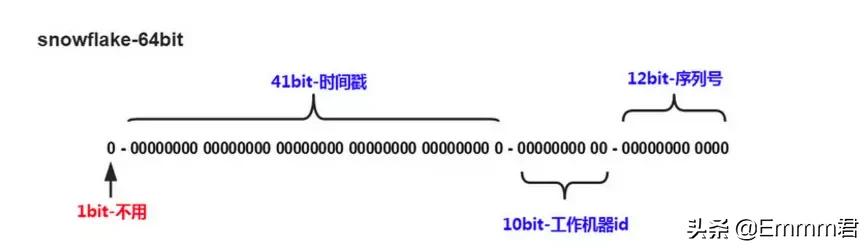

前文做了架构的选型，在这里需要对系统的架构设计做个简单的整理，本文主要从服务拆分与数据库的分库分表2个方面进行总结
服务拆分
服务的拆分是与业务紧密相关的，从直觉上，以业务来拆分服务符合面向对象封装的特性，容易理解，从性能上，分布式系统面向的面向的问题是如何在高并发、大流量的情况下保持系统的可用性、稳定性，以业务来拆分服务，可以很好的控制流量及IO控制。
还有一个心得是，什么叫以业务拆分？一种标准是参考用户的角色，比如在商城这个经典的例子中，用户角色包括：消费者、商家、仓库、快递4种角色，围绕他们问题空间创建各自的服务。
我猜想既然服务的架构与业务紧密相关，相似互联网领域，他们的服务结构是相似的
数据库分库分表
服务拆分好之后，数据库的抽象就定下来了，数据库本身有自己的问题，需要考虑到。链接
在微服务的架构设计中，一般是一个服务跟一个数据库，但这事并不绝对，不能太教条。关联是绝对的，内聚是相对的，服务再怎么拆分，总会有其边界，那些边界处总会与其他服务产生一些关联，比如要同时修改或者查询2个库中的数据，这就牵扯到事务一致性问题以及跨库join。另外如果这里连接是大量存在的，那么说明服务的切分、数据库的分库是不合理的。
表的存储是有上限的，当数据过大时，就会用到分表，这些分开的表其结构是相同的，也不存在它们之间的关联问题，最主要的是查询，比如跨多个分表的分页、排序问题
事务一致性
分布式事务
当更新内容同时存在于不同库找那个，不可避免会带来跨库事务问题。一般可使用“XA协议”和“两阶段提交”处理。 分布式事务能最大限度保证了数据库操作的原子性。但在提交事务时需要协调多个节点，推后了提交事务的时间点，延长了事务的执行时间，并发的性能就会下来。最终一致性
对于性能要求很高，但对一致性要求不高的系统，不苛求实时一致性，这样只要在允许的时间段内达到最终一致性即可，可采用事务补偿的方式。与事务在执行中发生错误立刻回滚的方式不同，事务补偿是一种事后检查补救的措施，一些常见的实现方法有：对数据进行对账检查，基于日志进行对比，定期同标准数据来源进行同步等。
跨库join
全局字典表
就是系统中所有模块都可能依赖的一些表，为了避免库join查询，可以将这类表在每个数据库中都保存一份。
这个适用场景不多，因为这些表的修改会带来一致性问题，少修改甚至不修改字段冗余
就是将另外一个库表的需要join读取的字段存在本表中，减少join。 比如，订单表在保存userId的时候，也将userName也冗余的保存一份，这样查询订单详情顺表就可以查到用户名userName，就不用查询买家user表了。
这个适用场景也不会很多，同样是一致性的问题Service层面组装
在系统service业务层面，分两次查询，第一次查询的结果集找出关联的数据id，然后根据id发起器二次请求得到关联数据，最后将获得的结果进行字段组装。这是比较常用的方法。
跨节点分页、排序、函数
跨节点多库进行查询时，会出现limit分页、order by 排序等问题。分页需要按照指定字段进行排序，当排序字段就是分页字段时，通过分片规则就比较容易定位到指定的分片；当排序字段非分片字段时，就变得比较复杂.需要先在不同的分片节点中将数据进行排序并返回，然后将不同分片返回的结果集进行汇总和再次排序，最终返回给用户。
也就是MapReduce的做法，这样的操作很耗费CPU和内存资源
全局主键避重问题
在分库分表环境中，由于表中数据同时存在不同数据库中，主键值平时使用的自增长将无用武之地，某个分区数据库自生成ID无法保证全局唯一。因此需要单独设计全局主键，避免跨库主键重复问题。

snowflake算法，在同一时间，同一机器，重复的可能性比较小：
- 第一位未使用
- 接下来的41位是毫秒级时间，41位的长度可以表示69年的时间
- 5位datacenterId,5位workerId。10位长度最多支持部署1024个节点
- 最后12位是毫秒内计数，12位的计数顺序号支持每个节点每毫秒产生4096个ID序列